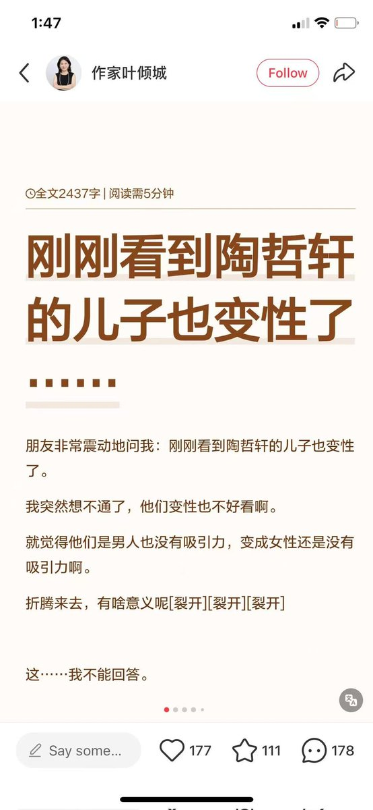

拱北靠北
@psyofsouthwest
如果非要论生命繁衍，放大到地质年代更迭尺度，上一代的优势种群，下一代必然灭绝。以人类面对地球自然环境的无力而论，行星改造是不可能的，这就堵死了星际移民。而因环境适应固化的基因表达，在行星级突变面前，生再多也是徒劳。这位口中的传承还是想在种群竞争中获得数量优势，和老鼠没啥区别。

Yang Yang
@YangYan60107172
陶哲轩的儿子变性了。
这是另外一条斩杀线：让其他族裔优秀的基因传承不下去。 https://t.co/SZGK0SlLVS